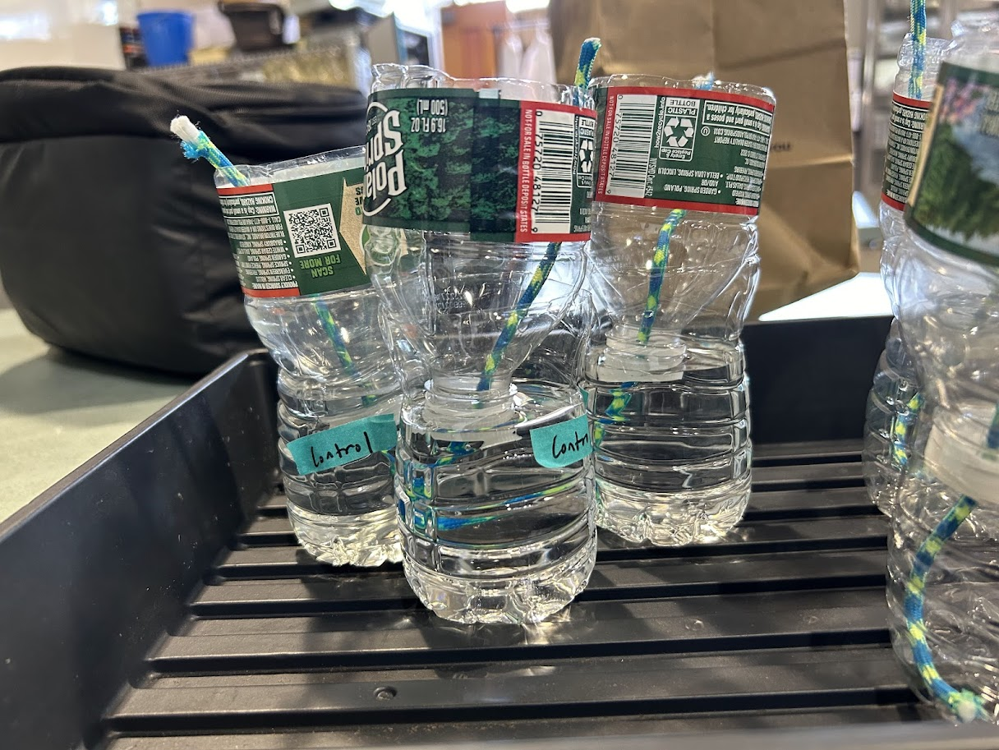
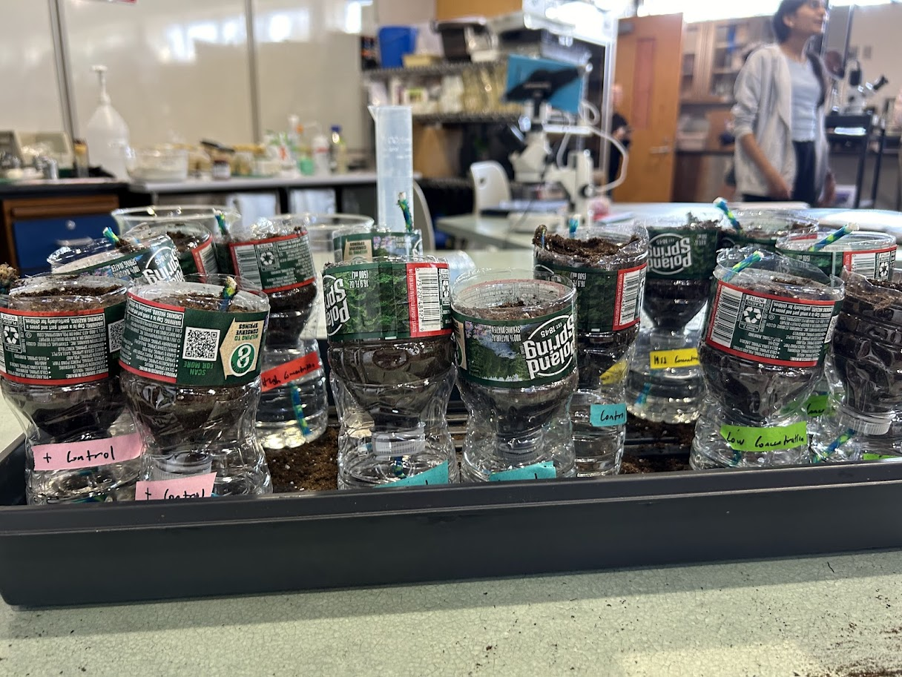
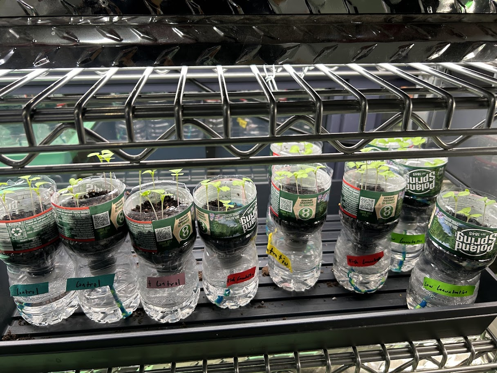
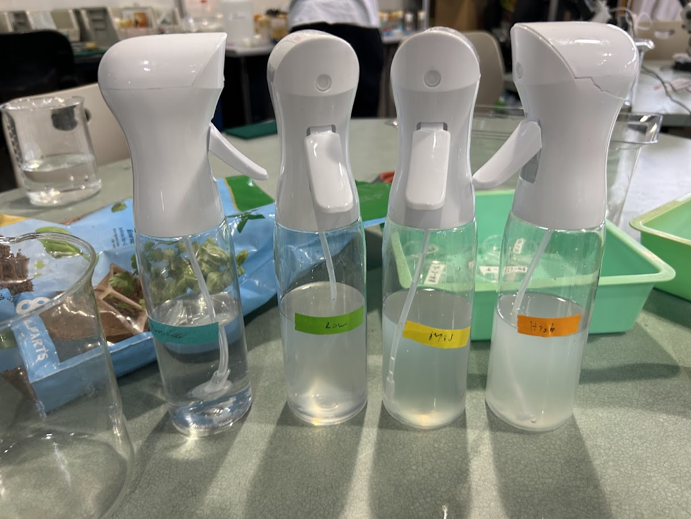
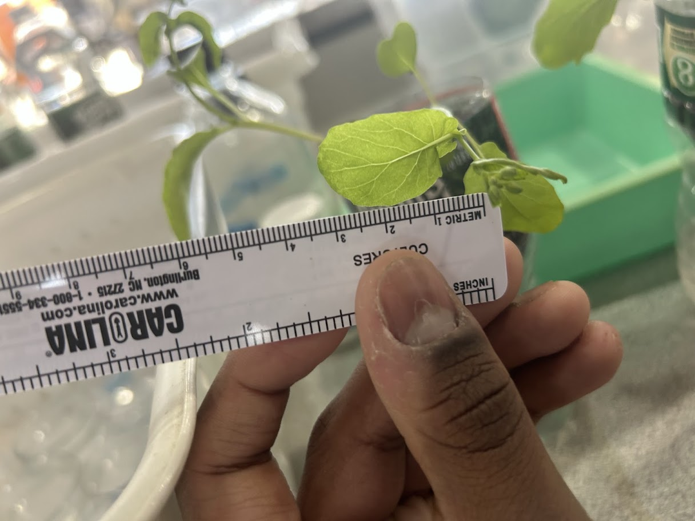

Step |
Description |
Image |
|---|---|---|
1 |
Set up growing environment (40 plants) |
 |
2 |
Add conditioned soil and water into each planter |
 |
3 |
Insert seeds into the soil, let them grow, and transplant them |
 |
4 |
Add differing concentrations of L.reuteri into water and substitute them for normal water |
 |
5 |
Take pictures of leaves and use ImageJ to measure dimensions |
 |